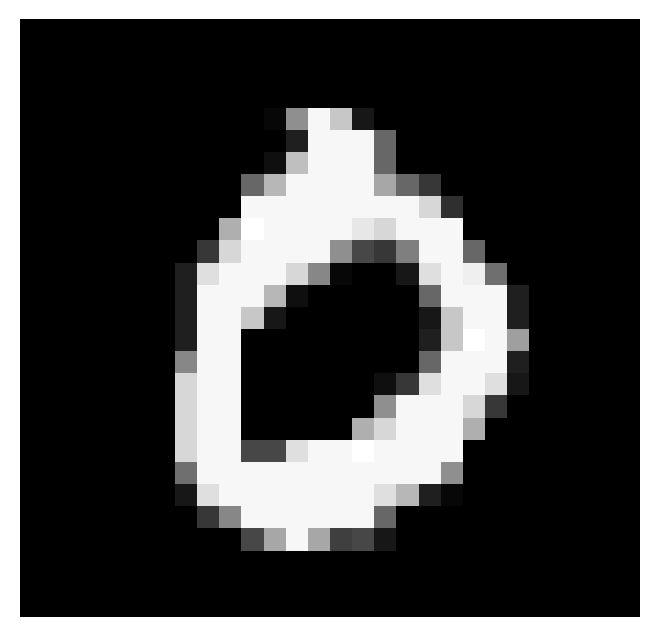
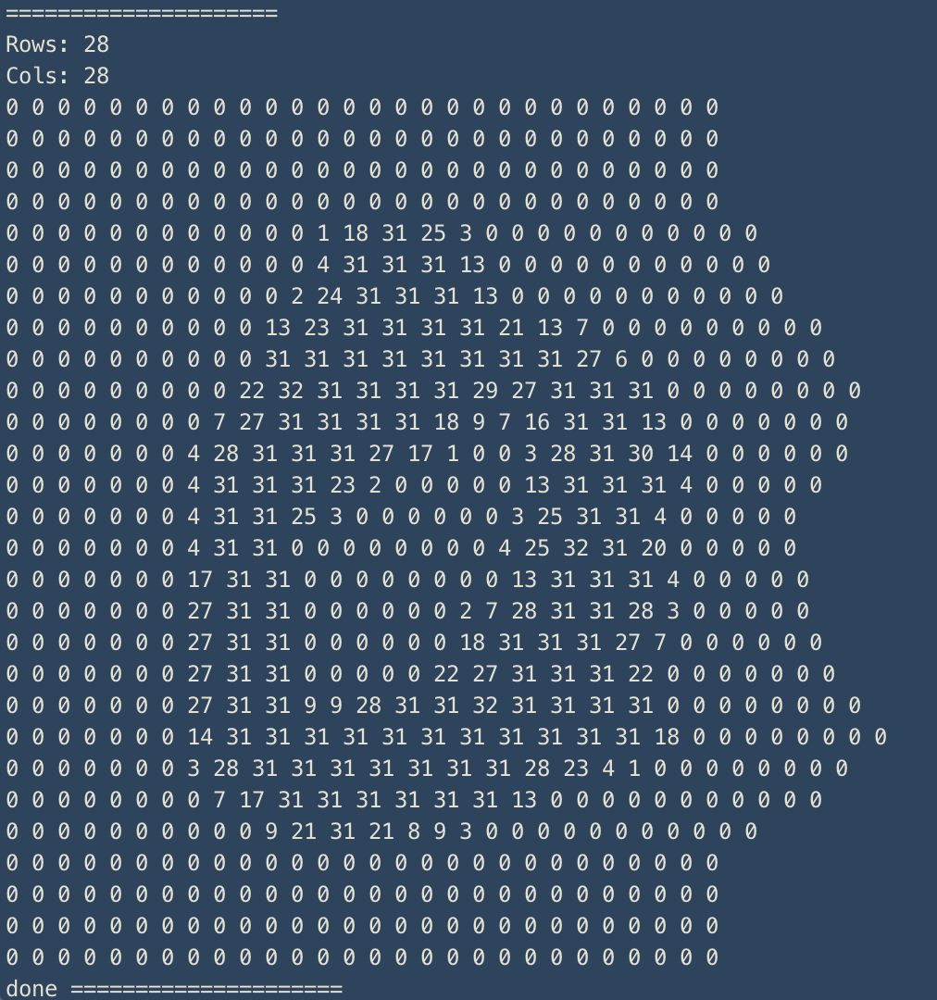
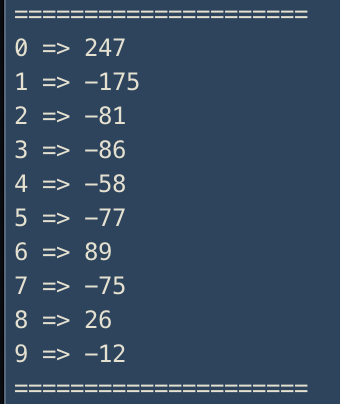
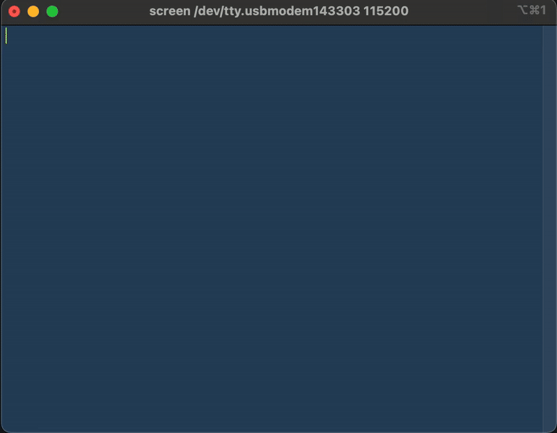

ambientMNIST
MNIST digit classification running entirely on a microcontroller — no Python, no host GPU, no ML framework. A 28×28 grayscale image is quantized to 5-bit pixel values, streamed over UART at 115200 baud, and the MCU returns a score vector over all 10 digit classes in real time.
Demo
How it works


On the host side, a Python script reads a test image from the MNIST dataset, quantizes each pixel
from 8-bit (0–255) down to 5-bit (0–31), and transmits the 784 values over USB serial using
screen /dev/tty.usbmodem* 115200. The MCU receives the stream, runs the classifier
weights baked into flash memory, and prints the 10-class score vector back to the terminal.

Serial terminal

screen /dev/tty.usbmodem143303 115200 — the MCU's UART output viewed in real time.Why on-device?
Sending images to a cloud API for digit classification is trivial. Doing the full forward pass in C on a microcontroller with no OS, no heap allocations, and integer-only arithmetic is the interesting constraint. The 5-bit quantization cuts memory bandwidth by 37% vs. 8-bit while preserving enough precision to maintain classification accuracy. This project explored how far you can push a simple linear classifier at the edge — and how little you need to get MNIST right.
Stack
C · UART / USB Serial · Python (host-side data prep) · 5-bit quantization · Linear classifier · MNIST dataset